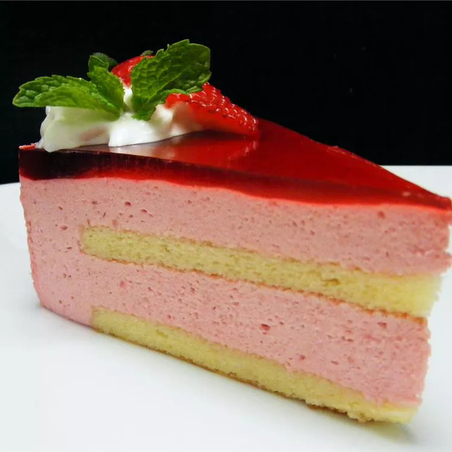

Genoise Sponge

Description
This Genoise sponge is perfect for a special occasion.
Top with fruit and cream or layer with your favorite frosting.
Ingredients
- 6 lange egg whites
- 1/2 teaspoon cream of tartar
- 3/4 cup white sugar
- 1 cup butter, softened
- 1 cup white sugar
- 6 large egg yolks
- 2 cups sifted cake flour
- 1/2 teaspoon baking powder
- 1/2 teaspoon salt
Directions
Step 1
Preheat the oven to 350 degrees F (175 degrees C). Grease a 10-inch cake pan.
- h4>Step 2
Beat egg whites and cream of tartar until soft peaks form.
Add 3/4 cup sugar gradually, beating until very stiff.
- h4>Step 3
Cream butter and 1 cup sugar in a large bowl with an electric beater until light in color.
Add egg yolks, and beat until thick and fluffy. Sift flour, baking powder, and salt over batter; fold in.
Gently fold in egg whites. Pour batter into prepared pan.
- h4>Step 4
Bake in the preheated oven until a toothpick inserted into the center comes out clean, about 50 to 60 minutes.
Cool in the pans for 10 minutes, then remove to a wire rack to cool completely.